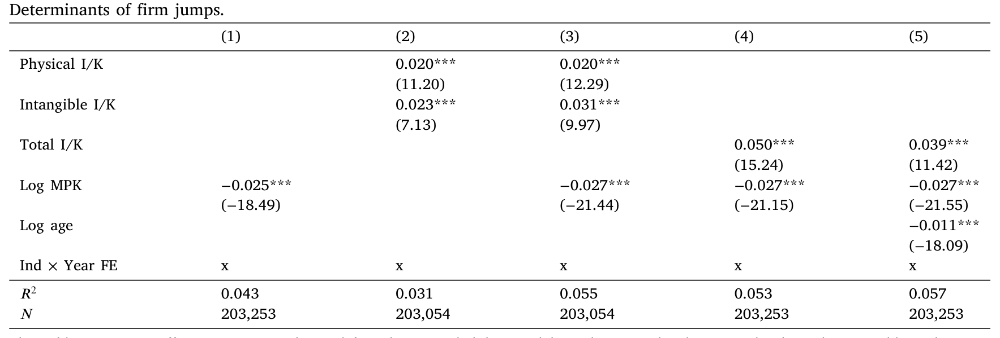
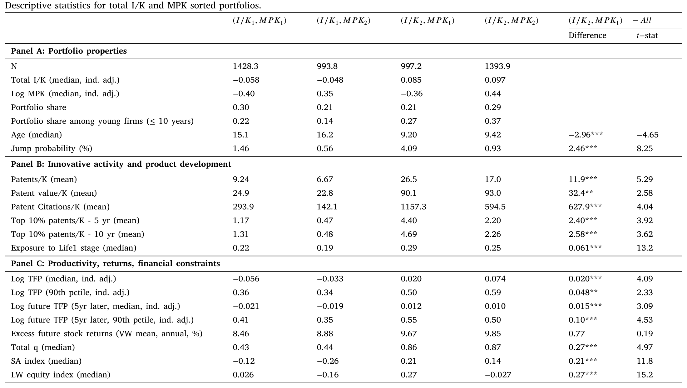
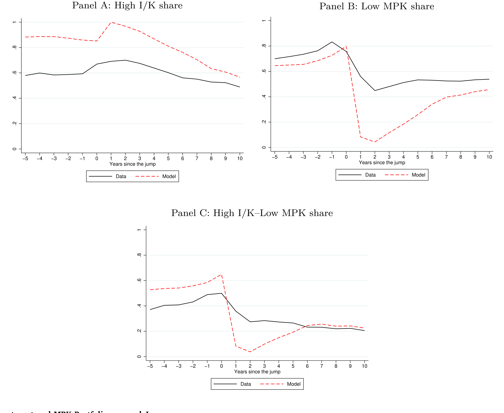
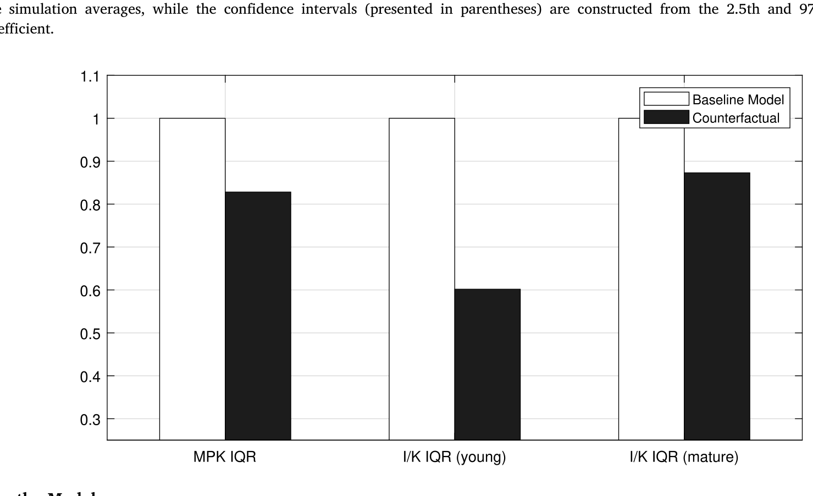
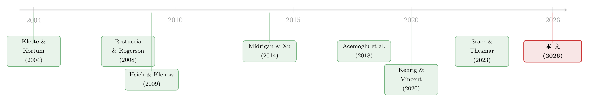

投资于「错配」：那些看起来在乱花钱的公司，其实在赌一次跳跃
本文读的是 Kılıç & Tüzel (2026, Journal of Financial Economics)：在 Compustat 里，约 20% 的公司一边维持着高于中位数的投资率，一边却只有低于中位数的资本边际产出（MPK），看上去是在「错配」资本。但作者发现，这些公司更年轻、更可能在随后几年里经历销售与 MPK 的「跳跃」，专利产出是同行的两倍多，而且它们的投资能预测未来的总体生产率。换句话说，传统的 MPK 离散度把它们误判成了浪费——抹掉这种「错配」，离散度确实下降了，但总产出也跟着下降了。
1 一个让人犯嘀咕的现象
先讲个我们都熟悉的画面。一家公司，资本投得很猛，产出却平平——用经济学的语言说，它的资本边际产出（marginal product of capital, MPK）很低。按照过去二十年「错配」（misallocation）文献的标准读法，这就是一笔被错配的资本：要是把这些钱从它手里抽出来、转给那些 MPK 更高的公司，整个经济的产出就能提高，而公司之间的生产率离散度也会下降。这套逻辑的源头，就是 Hsieh and Klenow (2009) 那篇影响深远的工作——他们把公司间 MPK 的离散度（dispersion）当作衡量错配的尺子，离散度越大，错配越严重。
听起来天衣无缝。可是，Tesla 和 Amgen 这样的公司怎么办？它们上市之后，连着好几年砸下巨额投资，产出却很低——按上面的尺子量，活脱脱就是「错配」的典型。然而后来的故事我们都知道了：它们的销售和生产率最终都坐上了火箭。如果当初真有人把资本从它们手里「重新配置」走，理由仅仅是「你现在 MPK 低」，那损失的恰恰是长期效率。
这就是本文要戳破的那层窗户纸：低 MPK ≠ 错配。一家公司当下的 MPK 低，可能不是因为它在浪费资本，而是因为它在为一次尚未到来的「跳跃」提前下注。
于是作者把镜头对准了这样一类公司——相对于产出累积了「过多」资本的公司，并给它们起了个略带反讽的名字：「投资于错配」（investing in misallocation）。本文要回答的核心问题就是：这些公司到底是谁？它们的存在，对我们理解 MPK 离散度、对我们理解「错配是不是真的有害」，意味着什么？
2 先把「跳跃」定义清楚
要讲清楚这个故事，第一步是得有一个干净的、可操作的「跳跃」定义。作者是这样做的：一家公司在某段时间里，销售额翻了一倍以上，同时 MPK 至少上升 50%，就记为一次跳跃（jump）。为了压噪声，他们用的是四年窗口——把 t-1、t 两年到 t+1、t+2 两年的增长，记为发生在 t 年的事件。
这个事件有多稀有？1975 到 2019 年间，单看每一年，一家公司发生跳跃的无条件年概率只有 1.62%。但稀有不等于不重要：在 1975 年后进入 Compustat、且存活至少 5 年的公司里，有 17% 在 2019 年前至少经历过一次跳跃。而且跳跃并不是少数行业的专利——化工（尤其是制药）、金属采矿、油气、专业科学仪器，跨越很多行业的公司都会跳。
接着，一个自然的问题是：什么样的公司更容易跳？ 作者跑了一个线性概率模型（linear probability model），被解释变量是「下一期是否发生跳跃」的虚拟变量，解释变量则是滞后的投资率 I/K（分物理资本与无形资本）、滞后的 Log MPK、以及公司年龄。所有回归都带上了行业×年度固定效应（industry × year fixed effects），也就是说，所有比较都发生在同一行业、同一年份内部，标准误聚类在公司-年层面。结果见表 1。

Table 1
读数很干净，我把关键系数挑出来：
- 物理资本投资率
Physical I/K：系数0.020（t =11.20）；无形资本投资率Intangible I/K：0.023（t =7.13）。两者量级相当——物理投资和无形投资都在预测跳跃，谁也不能少。 - 把两者合成总投资率
Total I/K后，系数0.050（t =15.24），而且总投资几乎吸收了两个分项的全部解释力（第 4 列）。 Log MPK的系数是−0.025（t =−18.49）——当下 MPK 越低，未来越可能跳。- 加入
Log age后，系数−0.011（t =−18.09）：越年轻越爱跳。
把第 3 列两个变量放在一起看，结论才真正有意思：给定当前 MPK，投资率越高，跳跃概率越大。反过来说，那些「明明 MPK 已经很低、却还在拼命投资」的公司，恰恰是最可能迎来快速增长的一批。这就把「低 MPK + 高投资」这个看似矛盾的组合，第一次和「未来的爆发」挂上了钩。
3 把公司装进四个抽屉
光有回归还不够直观。本文真正的叙事支点，是一个2×2 的投资组合排序：在每个两位 SIC 行业内部，按 I/K 的上下中位、MPK 的上下中位，把公司分进四个抽屉——
- \((I/K_1, MPK_1)\)：低投资、低 MPK；
- \((I/K_2, MPK_2)\)：高投资、高 MPK；
- \((I/K_1, MPK_2)\)：低投资、高 MPK；
- \((I/K_2, MPK_1)\)：高投资、低 MPK——这正是「投资于错配」的主角。
如果世界真像标准模型设想的那样、生产率是静态或纯外生的，那投资率和 MPK 应该完全正相关，所有公司都该落在两条对角线上（\(I/K_1,MPK_1\) 或 \(I/K_2,MPK_2\)）。可现实是：42% 的 Compustat 公司落在了对角线之外。这本身就说明，投资和 MPK 的关系，远比教科书复杂。

Table 2
表 2 里那一列 \((I/K_2, MPK_1)\) 几乎自己就讲完了整个故事：
- 跳跃概率
4.09%，是全样本平均（约 1.6%）的两倍多，也远高于其它三个抽屉（1.46%、0.56%、0.93%）。组间差异 t 值高达8.25。 - 更年轻：年龄中位数
9.20年，而低投资组合是 15 年上下。全样本里有21%的公司落在这个抽屉，但在「年轻公司」（进入样本不超过 10 年）里，这个比例升到27%。 - 创新强度爆表：每单位资本的专利数
Patents/K均值26.5，是低投资-低 MPK 组（9.24）的近三倍；专利价值90.1、专利引用1157.3，更是把其它组甩开一大截。
一句话总结表 2：高投资-低 MPK 的公司，是经济里最年轻、最爱创新、也最可能迎来爆发的那一批。把它们当成「在浪费资本」，未免太冤了。（关于创新如何一步步长成增长，可参见《把「工艺创新」一刀切开：地基工艺如何长出新产品》。）
4 跳跃前后，公司经历了什么
然后，作者把时间轴拉开，看公司在跳跃前后各年的轨迹。无论在数据里还是模型里，规律都惊人地一致：在跳跃到来之前的若干年，这些公司就持续维持着相对同行更高的投资率、更低的 MPK——它们是在「蓄力」。跳跃当年，投资进一步上冲，公司抓住生产率骤升的窗口加码。此后投资逐渐回落，稳定到与同行相仿的水平；而 MPK 在跳跃后保持高位、并不回到跳跃前的低水平。

Figure 3: Investment and MPK Portfolios around Jumps
创新活动也呈现出同样的「先扬后抑」：跳跃前与跳跃当口，公司的创新最活跃，随后在跳跃后的十年里慢慢淡出——这暗示着一次公司类型的永久性切换：它从一个「有潜力但尚未兑现」的状态，跳进了「已兑现」的状态。这一点，正是下一节模型要刻画的核心。
5 一个会「内生跳跃」的增长模型
到这里，所有的经验事实都指向同一个机制：投资不只是为了当期多产出，更是为了提高未来跳跃的概率。 这正是本文模型的灵魂。作者搭了一个简单的内生增长（endogenous growth）模型，思路上承接 Klette and Kortum (2004) 与 Acemoğlu et al. (2018)——前者让投资与资本积累抬高「产出爆发」的可能性，后者把生产率增长的异质性沿着创新型公司的生命周期铺开。
模型把公司分成两类：高类型（high-type）和低类型（low-type）。两者的差别在于增长潜力——只有高类型公司才有可能经历一次显著的正向生产率跳跃，而且这个跳跃概率会随着它投资得越多而上升。模型只用一种资本，把物理资本（设备、软件）和无形资本（创新能力、组织资本、品牌、客户基础）打包在一起，对跳跃的微观来源保持「不可知论」——因为数据已经告诉我们，物理投资和无形投资都在预测跳跃。
关键在于：高类型公司会最优地选择高投资，不是因为当下就需要这么多资本，而是为了最大化跳跃发生的概率、并为跳跃到来后做好准备。于是，它们的 MPK 在跳跃前被「人为」压低了——这就在横截面上撕裂了 MPK 与投资本该有的紧密正相关，制造出一个现实中真实存在、占比合理的「高投资-低 MPK」群体。
模型的核心，可以浓缩成高类型公司的一个贝尔曼方程（Bellman equation）。把它的各个部件拆开看：
逐项读一遍这个方程，机制就一目了然了。第一项 \(\pi(k,z)\) 是当期利润，由现有资本和当前生产率决定。第二项是投资成本。最值得玩味的是第三项里的 \(\lambda(i)\)：它是跳跃概率，而且是投资 \(i\) 的递增函数。一旦跳跃发生，公司就跃迁到高生产率状态 \(z^{H}\)（对应延续价值 \(\mathbb{E}\,V_H(k',z^{H})\)）；没跳成，则停留在原状态 \(z\)。
正是 \(\lambda(i)\) 这一项的存在，让高类型公司愿意在 MPK 还很低时就「超额」投资——因为多投的每一块钱，都在买一份「跳跃的彩票」。普通的 q 理论投资模型里没有这一项，投资率自然就和 MPK 锁死了。
如果对这个方程关于 \(i\) 求一阶条件，直觉上可以写成：
$$\underbrace{1 + \Phi_i(i,k)}_{\text{marginal cost}} = \beta\Big[\,\mathbb{E}\,\partial_{k'}V_H \;+\; \lambda'(i)\big(\mathbb{E}\,V_H(k',z^{H}) - \mathbb{E}\,V_H(k',z)\big)\Big]$$
等式右边比标准模型多出来的那一块 \(\lambda'(i)\big(\mathbb{E}\,V_H(k',z^{H}) - \mathbb{E}\,V_H(k',z)\big)\)，就是「投资的期权价值」：多投一点，跳跃概率上升 \(\lambda'(i)\)，而跳跃能带来的价值跃升是高、低两个状态延续价值之差。这一项把投资的边际收益顶高了，公司因此愿意忍受更低的当期 MPK。这就是「投资于错配」在模型里的数学形态。
6 反事实：抹掉「错配」，效率反而掉了
模型估出来、能匹配横截面的关键特征之后，本文做了一个非常漂亮的反事实实验（counterfactual）：假设跳跃在数据生成过程里依然存在，但高类型公司假装看不到它——它们不再「投资于错配」，而是像一个有着相同生产率和资本的低类型公司那样投资。
结果如何？
- 在反事实世界里，投资与 MPK 在横截面上重新紧密对齐，那个「高投资-低 MPK」的抽屉消失了。这恰恰和真实数据矛盾——现实中，高投资公司内部的 MPK 离散度，和全样本一样高。
- 整体的 MPK 离散度与投资离散度都下降了，按 Hsieh-Klenow 的尺子量，「错配减少了」。
- 但是——这是全文最反直觉、也最重要的一击——总体生产率也跟着下降了。

Figure 4: Dispersion in the Model
换句话说，那个让横截面看起来「乱糟糟」的 MPK 离散度，并不是纯粹的浪费；它是高类型公司主动下注、追逐跳跃的副产品。消灭这种离散度，等于消灭了下注本身，于是未来的跳跃也少了，总产出反而更低。 与这个模型推论相印证，作者在数据里发现：高投资-低 MPK 组合的中位投资率，是未来总体 TFP 增长的稳健预测变量——投资率每上升一个标准差，对应未来 5 年 TFP 增长上升约一个标准差。这是一个量级相当可观的预测关系。
这也正好呼应了 Haltiwanger (2016) 与 Haltiwanger et al. (2018) 的警告：传统的错配度量不仅可能识别出虚假的低效，而且更容易把那些真正握有独特优势（未来需求、客户基础）的公司误伤。
7 文献脉络
把这条线索捋一捋，本文的位置就清楚了。
故事的源头是 Restuccia and Rogerson (2008) 与 Hsieh and Klenow (2009)：他们把异质性的扭曲引入投入与产出价格，确立了「用 MPK 离散度衡量错配」的范式。此后，文献一头扎进「离散度从哪来」：Asker et al. (2014) 归因于调整成本与波动；David et al. (2016) 归因于信息摩擦；另一条更粗的支流——Midrigan and Xu (2014)、Moll (2014)、Whited and Zhao (2021)、Bau and Matray (2023)——则把矛头指向金融摩擦（financial frictions），强调融资约束如何阻碍高 MPK、低投资的公司拿到最优资本。再往后，David and Venkateswaran (2019) 搭了一个统一框架来分解各种渠道，David et al. (2022) 则指出公司风险溢价能制造出一个持久的、楔入投资决策的公司特异因子。

与此同时，方法论也在演进：Sraer and Thesmar (2023) 提出用准自然实验（税改、银行去管制）去估计摩擦松动对配置效率的影响——但他们的框架里，恰恰不包含「某些公司能靠投资内生地创造增长」这种异质性，而这正是本文要补的那块拼图。还有一个重要的「例外派」：Kehrig and Vincent (2020) 论证了公司内部跨工厂的 MPK 离散度可以是「好的」离散度。本文则发现了另一种「好的离散度」——由公司基于增长前景做出的投资选择所产生的离散度。
把内生增长这条线接进来——Klette and Kortum (2004)、Acemoğlu et al. (2018)——本文的贡献就站住了：它第一次系统地论证，被传统尺子判为「错配」的那部分 MPK 离散度，本身可能是增长的引擎。
评论与延伸（Q&A + 研究方向）
（a）几个可能的疑问
Q：「跳跃」的阈值（销售翻倍 + MPK 涨 50%）是不是太随意，结论会不会被它牵着走？
作者做了稳健性检查。把门槛放松到「销售涨 ≥50%、MPK 涨 30 个对数点」，年跳跃概率升到
3.2%；收紧到「销售涨 ≥150%、MPK 涨 50 个对数点」，则降到1%。表 1 的预测关系（投资正向、MPK 负向、年龄负向）在各阈值下都保持显著。所以阈值影响的是被识别出来的跳跃数量，而非关系的方向与显著性。
Q：低 MPK 预测跳跃，会不会只是「均值回归」——MPK 低了自然要反弹？
这是最该警惕的解释。但作者的关键证据不是「低 MPK 反弹」，而是在给定 MPK 的前提下，投资越高、跳跃越可能（表 1 第 3 列）。纯均值回归无法解释为什么「同样低 MPK，但投得多的公司」跳得更频繁。而且跳跃后 MPK 停在高位、不回落，也不像机械的均值回归。
Q：MPK 是用什么算的？会不会只是会计或度量误差？
本文沿用 Peters and Taylor (2017) 的做法，把物理资本与无形资本合并成总资本来构造
I/K与MPK。这一步很关键——如果只看物理资本，大量无形密集的年轻创新公司会被系统性地误判。把无形资本算进来后，「高投资-低 MPK」群体仍然稳健存在，说明它不是漏算无形资产造成的假象。
Q：这是不是只是把「错配文献」重新贴个标签，说成「期权价值」？
不止于贴标签。差别在可证伪的预测：本文的机制说「这种离散度伴随更高的总生产率」，而金融摩擦类模型通常说「松绑约束、压低离散度 → 效率提升」。本文用 TFP 预测回归（投资率→未来 5 年 TFP）和模型反事实（抹掉错配 → 产出下降）把这两种世界观对立起来，并给出了支持前者的证据。
Q：那是不是意味着政策上「永远不该重新配置资本」？
不能这么读。本文并不否认真实的金融摩擦和错配存在；它说的是当下 MPK 这个单一指标，不足以判断一家公司是否在浪费资本。在一个有摩擦的世界里，松绑约束后的「有效配置」，甚至可能需要把更多资源给那些低 MPK 但有内生增长潜力的创新公司——从而进一步抬高 MPK 离散度。这对「离散度下降=效率改善」的简单读法是直接的反驳。
Q：4% 的跳跃概率听起来很低，凭这点尾部事件就能撑起整个机制吗？
这正是 rare-disaster 式思维的镜像：低频不等于低权重。跳跃带来的价值跃升足够大（销售翻倍以上、MPK 永久抬升），即便概率只有个位数百分比，其期权价值仍足以改变公司的最优投资决策。模型里 \(\lambda'(i)\) 乘以「高低状态延续价值之差」这一项，量级上完全可以主导一阶条件。
（b）几个可能的研究问题与提案
-
「投资于错配」与信用市场定价。 【经济故事】既然这些公司在为一次尚未到来的跳跃下注，它们的现金流是「左偏小、右尾大」的不对称结构——这对债券持有人意味着违约风险的非对称定价。债权人能否在事前就给「高投资-低 MPK」公司更高的信用利差，又是否在跳跃实现后获得利差压缩？【可行性】中。需要把 Compustat 的
I/K–MPK排序映射到 TRACE 公司债二级市场与 Mergent FISD 的发行条款，做组合排序与利差回归；识别上要控制行业×年度与传统信用因子，难点在于把「跳跃期权」从一般信用风险里剥离。 -
外资持有人会不会更看得懂「错配型」公司？ 【经济故事】如果低 MPK 是一种被误读的信号，那么信息更充分、或投资期限更长的投资者（如某些外资机构）也许更愿意持有这类公司，从而在跳跃前就建仓。【可行性】中。用 FactSet/13F 与 Thomson Reuters 国际持股数据，比较「高投资-低 MPK」组合在外资 vs. 本土机构间的持股差异，并看持股是否预测跳跃。识别要小心反向因果（是外资带来增长，还是增长吸引外资）。
-
跳跃前的低 MPK 与公司债流动性。 【经济故事】蓄力期的公司基本面噪声大、信息不对称强，其债券二级市场流动性可能更差；跳跃实现后信息释放，流动性应当改善。【可行性】中到高。用 TRACE 计算 Amihud/bid-ask 等流动性指标，做跳跃事件研究（event study），看流动性在跳跃前后的轨迹。数据现成，识别相对干净，是一个 doable 的小切口。
-
把反事实搬到准自然实验上。 【经济故事】本文的反事实是模型内的；现实中若有一次外生地放松（或收紧）了某类公司融资约束的政策冲击，能否直接观察到「高投资-低 MPK」群体占比、以及随后 TFP 的变化？【可行性】低到中。需要一个干净的、只作用于特定公司群体的融资冲击（如某次银行去管制或税改），并能识别出受影响公司中的高/低类型。识别门槛高，但若找到合适的冲击，能为 Sraer-Thesmar 框架补上「内生增长」这一维。
-
跳跃概率 \(\lambda(i)\) 的微观结构。 【经济故事】本文对跳跃来源保持不可知论；但物理投资与无形投资对跳跃的贡献是否对称、是否存在互补？【可行性】高。表 1 已显示两者系数相近，可进一步加入交互项、按行业（制药 vs. 仪器 vs. 油气）异质性拆分，数据完全在手，是一个低成本的延伸。
我的判断
这篇文章最漂亮的地方，是把一个度量层面的批评升级成了一个有结构、可反事实的机制。说「MPK 离散度未必等于错配」并不新鲜——Haltiwanger、Kehrig-Vincent 都说过；但本文用「内生跳跃概率 \(\lambda(i)\)」这一根弦，把横截面事实（42% 落在对角线外、高投资-低 MPK 组跳跃率 4.09%、专利三倍）、动态事实（跳跃前后的投资与 MPK 轨迹）、以及总量含义（投资率预测 5 年 TFP、反事实里抹掉离散度则产出下降）串成了一条自洽的线。这种「事实—模型—反事实」的闭环，是这篇 JFE 的分量所在。
要说对识别的担忧，我有两点。其一，跳跃是事后定义的：用「销售翻倍 + MPK 涨 50%」回头去标注事件，天然带有幸存者与定义内生的味道——一家公司之所以被标为「蓄力中」，部分是因为我们已经知道它后来跳了。作者的事前回归（用滞后投资预测跳跃）缓解了这一点，但没有完全消除「我们是在拟合跳跃的相关物，而非其原因」的疑虑。其二，反事实完全活在模型里：抹掉「投资于错配」后产出下降，这个结论的可信度，取决于模型对 \(\lambda(i)\) 函数形式和高/低类型分布的设定——这些都是估出来的，而非外生识别的。
后续我最想看到的，是把这套逻辑搬到信用市场和外资持有人上去验证（见上文研究方向 1、2）：如果「低 MPK 是被误读的下注」这个故事为真，那么不同类型的资本提供者——尤其是债权人和长期外资——是否在用脚投票、提前识别出了这些公司？那将是对本文机制一个独立于股权和会计度量的、更硬的外部检验。
参考文献
- Acemoğlu, D., Akçiğit, U., Alp, H., Bloom, N., Kerr, W. (2018). Innovation, reallocation, and growth. American Economic Review 108(11), 3450–3491.
- Asker, J., Collard-Wexler, A., De Loecker, J. (2014). Dynamic inputs and resource (mis)allocation. Journal of Political Economy 122(5), 1013–1063.
- Bau, N., Matray, A. (2023). Misallocation and capital market integration: Evidence from India. Econometrica 91(1), 67–106.
- Hsieh, C.-T., Klenow, P.J. (2009). Misallocation and manufacturing TFP in China and India. Quarterly Journal of Economics 124(4), 1403–1448.
- Kehrig, M., Vincent, N. (2020). Good dispersion, bad dispersion. Working Paper / NBER.
- Klette, T.J., Kortum, S. (2004). Innovating firms and aggregate innovation. Journal of Political Economy 112(5), 986–1018.
- Midrigan, V., Xu, D. (2014). Finance and misallocation: Evidence from plant-level data. American Economic Review 104(2), 422–458.
- Moll, B. (2014). Productivity losses from financial frictions: can self-financing undo capital misallocation? American Economic Review 104(10), 3186–3221.
- Peters, R.H., Taylor, L.A. (2017). Intangible capital and the investment-q theory relation. Journal of Financial Economics 123, 251–272.
- Restuccia, D., Rogerson, R. (2008). Policy distortions and aggregate productivity with heterogeneous establishments. Review of Economic Dynamics 11(4), 707–720.
- Sraer, D., Thesmar, D. (2023). How to use natural experiments to estimate misallocation. American Economic Review 113(4), 906–938.
- Whited, T.M., Zhao, J. (2021). The misallocation of finance. Journal of Finance 76(5), 2359–2407.